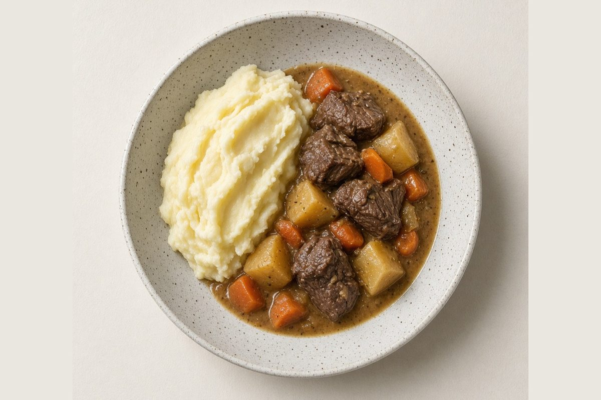

Beef and root veg stew with mash
- 30 min hands-on, about 2 hours in the oven
- Serves 4 + Jude
- Some hands-on time
- About 700 kcal per adult (estimate)
JudeBefore step 6. Take Jude's portion out before the tomato purée, salt and pepper go in.
Plain mash with a little milk, soft carrot and swede, and beef shredded very small. A spoon of the cooking liquid.
He loves mash. Chop the beef until there is no chew left in it.
Ingredients
Serves 4 + Jude. Tick as you go.
For this meal
After Jude's portion is out
The packs, and what they cost
Braising steak 800 g; Carrots 1 kg; Swede, 1; Maris Piper potatoes 2 kg; Onions 1 kg
Method
-
JudeFirst: Take Jude's portion out before the tomato purée, salt and pepper go in.
Keeping it
Two portions for tonight. Two freeze flat for 3 months. Defrost in the fridge and reheat until piping hot.